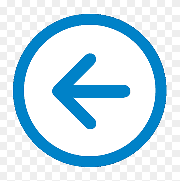

Existem 3 tipos de listas, Ordenadas ol, Desordenadas ul e Por definição dd
Listas Ordenadas
Atributos das listas
- reversed - Indica que irá ter uma lista reversa
- start - Indica por qual elemento deve começar a numeração start="10"
- type
- 'a' - Indica letras minúsculas
- 'A' - Indica letras maiúsculas
- 'i' - Indica algarismos romanos minúsculos
- 'I' - Indica algarismos romanos maiúsculos
- '1' - Indica números (padrão)
Listas desordenadas
Atributo das listas
- disc - Define como disco
- circle - Define como círculo
- square - Define como quadrado
